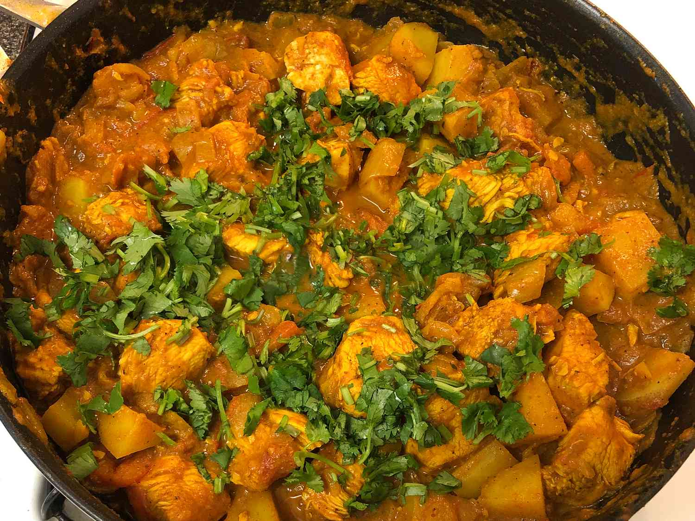

Bengali Chicken Curry With Potatoes

The cooked curry!
Ingredients:
- 2 tablespoons olive oil
- 2 large onions, diced
- 1 tablespoon ginger-garlic paste
- 2 large tomatoes, diced
- 1 teaspoon cayenne pepper, or more to taste
- 1 teaspoon curry powder
- 1 teaspoon garam masala
- 1 teaspoon ground turmeric
- 1 teaspoon ground cumin
- 4 skinless, boneless chicken breast halves - cut into bite-size pieces
- 2 large red-skinned potatoes, chopped
- ½ cup fresh cilantro
Steps:
- Heat the olive oil in a large skillet over medium-high heat.
Cook and stir the onions in the
hot oil until translucent,
about 5 minutes. Add the ginger-garlic paste and continue cooking
another 5 minutes. Reduce heat to medium; stir the tomatoes into
the mixture and cook until
the tomatoes are pulpy, 5 to 10 minutes.
Season with the cayenne pepper, curry powder,
garam masala,
turmeric, and cumin; cook and stir another 5 minutes.
- Add the chicken and potatoes to the mixture in the skillet; simmer,
stirring occasionally, until
the potatoes are tender and the chicken
is no longer pink in the center, about 20 minutes. Sprinkle
the
cilantro over the mixture and continue simmering another 10 minutes.
Serve hot.
Home